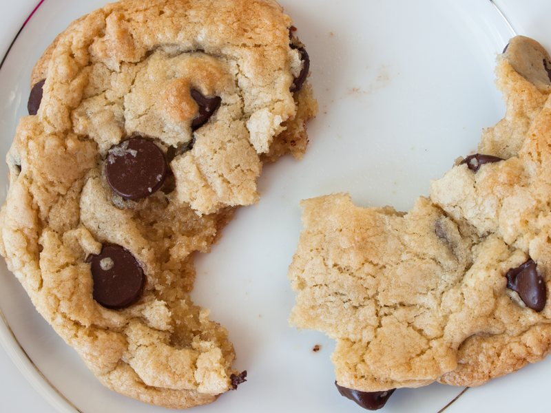
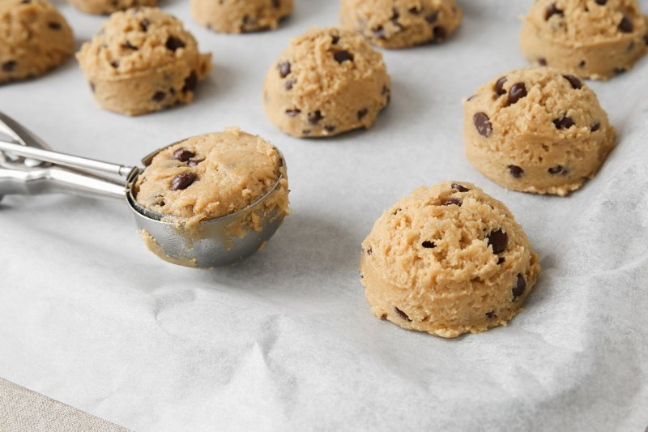
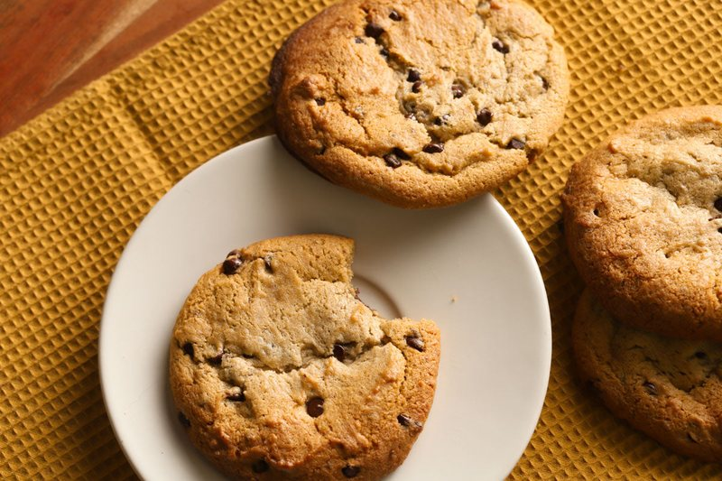

Bakery-Style Chocolate Chip Cookies (Vegan & Gluten-Free)
My professional chocolate chip cookie recipe, vegan and gluten-free: crisp edges, gooey centers, and a flax gel that holds it all together. Chill, scoop, freeze, bake from frozen.
Skip to recipe ↓This is the professional-grade chocolate chip cookie recipe from my bakery, vegan and gluten-free, scaled down to 12 cookies. Crisp golden edges, a gooey center, and a dough you can keep in the freezer for three months.
Everything here is weighed. Gluten-free flours pack differently every time you scoop them, so grams are what make this cookie come out the same twice. I’ve added cup measures too, but a cheap scale is the best upgrade you can make.
The Science Behind the Cookie
Flax gel: the binder
A binder in a cookie has four jobs: binding, texture, moisture and lift. Vegan butter already covers moisture and tenderness, so flax only has to do the binding. The difference is how I make it. I pour boiling water over the ground flax and give it a quick blitz with an immersion blender. The heat and the blending pull the mucilage out of the seed fast, and you get a thick, glossy gel in under a minute. That gel is your structure. It stretches, it holds everything together, and it keeps the cookie from crumbling.
Two sugars, two jobs
Cane sugar gives you crisp edges. It dissolves, then recrystallizes as the cookie bakes and cools, and that’s the snap at the rim. Brown sugar gives you the gooey center. The molasses in it holds on to water, so the middle stays soft and chewy. This recipe leans almost three to one toward brown sugar, which is why the center stays soft for days.
The flour blend
Oat flour is the bulk and brings a toasty, slightly sweet flavor. Rice flour gives the crumb its bite so it doesn’t go pasty. Tapioca adds chew, and a little potato starch holds moisture so the cookie is still tender tomorrow. Xanthan gum and psyllium husk take over the stretch and strength gluten would normally give.

Pro Tip: Don’t Scoop Right Away
Here’s the bakery trick. Once the dough is mixed, don’t scoop it. Throw the whole bowl in the fridge first. Gluten-free flours drink up water slowly, and that rest lets them hydrate and build structure. Dough that’s scooped and baked straight away spreads flat. Dough that’s rested holds its shape.
After it’s chilled, scoop it and put the dough balls in the freezer. They’ll last up to three months, and you can bake them straight from frozen, no thawing. I wrote about why that works in Bake Straight From Frozen.
Scale this recipe in my app
This is the exact formula I use at the bakery, and it lives in the recipe builder. Open it, scale it to 6 cookies or 600, and see the ratios, cost and nutrition update as you go. It’s free to download.
Open this recipe in the app →Bakery-Style Chocolate Chip Cookies

Equipment
- Kitchen scale
- Stand mixer or hand mixer
- Immersion blender
- Cookie scoop
- Baking tray and parchment
Ingredients
| Ingredient | Amount | Weight | % |
|---|---|---|---|
| Vegan butter (block) | 1⅓ cups + 1 tbsp | 320g | 23.90% |
| Brown sugar | 1 cup + 2 tbsp, packed | 242g | 18.10% |
| Cane sugar | 7 tbsp | 89g | 6.66% |
| Oat milk | 2 tbsp + 1 tsp | 34g | 2.56% |
| Boiling water | 2 tbsp + 1 tsp | 34g | 2.56% |
| Ground flaxseed | 2 tbsp | 14g | 1.02% |
| Vanilla extract | 1½ tsp | 6g | 0.47% |
| Oat flour | 2¼ cups | 212g | 15.83% |
| Rice flour | ¾ cup + 1 tbsp | 132g | 9.86% |
| Tapioca flour | ½ cup | 63g | 4.74% |
| Potato starch | 1½ tbsp | 14g | 1.02% |
| Baking soda | ¾ tsp | 4g | 0.30% |
| Xanthan gum | 1⅓ tsp | 4g | 0.30% |
| Psyllium husk | ½ tsp | 2g | 0.17% |
| Salt | ¼ tsp | 1g | 0.09% |
| Mini chocolate chips | 1 cup | 166g | 12.42% |
| Total | 1339g | 100% |
Instructions
- Make the flax gel. Pour the boiling water over the ground flax and hit it with an immersion blender for 20 to 30 seconds until it turns thick and glossy. That gel is what holds the cookie together. Let it cool for a few minutes.
- Cream. Beat the vegan butter with the brown sugar and cane sugar until light and fluffy, 3 to 4 minutes. Vegan butter runs wetter than you expect, so give it the full time.
- Wet mix. Add the flax gel, oat milk and vanilla. Mix until fully combined.
- Dry mix. In a separate bowl, whisk the oat flour, rice flour, tapioca flour, potato starch, baking soda, xanthan gum, psyllium husk and salt.
- Combine. Add the dry to the wet and mix until there are no dry pockets. You can’t overmix a gluten-free dough, so don’t be shy. Fold in the mini chocolate chips.
- Chill before you scoop. Don’t scoop yet. Cover the bowl and put it in the fridge for at least 2 hours, ideally overnight. The flours hydrate and the dough builds its structure, which is what stops the spread.
- Scoop and freeze. Scoop 12 balls, about 110g each, onto a lined tray. Freeze until solid, then move them to a bag or container. They keep up to 3 months in the freezer.
- Bake from frozen. Preheat to 400°F. Put the frozen dough balls straight on a lined tray, no thawing. Bake 8 to 10 minutes, rotating the tray at 5 minutes. Pull them when the edges are golden and the center still looks a little underdone (about 200°F inside).
- Rest. Leave them on the tray for 5 minutes before moving them. The center finishes setting as they cool.
Cookies spreading? The dough didn’t rest long enough or went in warm. Chill before scooping, freeze the balls solid, and bake straight from frozen.
Baked cookies keep 3 days in an airtight container. Dough balls keep 3 months in the freezer.
Want It Gooier?
Same dough, with a molten ganache sealed in the middle: try my Chocolate Chip Lava Cookies.